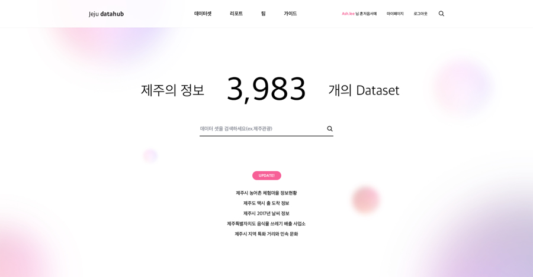
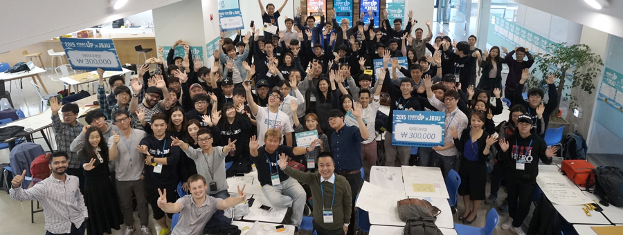

지역협력
카카오는 더 좋은 제주를 위해 VR, 빅데이터, Kakao 클래스 등 도내 관/기관, 기업 등과 함께 협력하고 있습니다. 또, 지역을 혁신할 수 있는 새로운 분야에 대한 가능성과 희망도 끊임없이 연구하고 있습니다.

카카오는 제주도청과 함께 과학기술정보통신부 지원을 받아 민관 융복합 빅데이터 테스트베드인 제주데이터허브(https://jejudatahub.net)를 구축하여 운영하고 있습니다. 공공 데이터와 민간 데이터를 융합하여 스타트업, 소상공인, 관광, 정책 등 다양한 영역에서 신규가치를 창출하는데 노력하고 있습니다.
또한, 제주 지역의 개발자, 학생, 시민들이 제주데이터허브를 쉽게 활용할 수 있도록 빅데이터 교육/세미나/컨퍼런스/경진대회/해커톤을 진행하고 있으며, 도내 중소기업 및 스타트업과 협력사업을 기획하고 개발중입니다.
도약과 연결을 위한 노력, 카카오와 제주창조경제혁신센터는 예비창업자, 소상공인, 창작 단체들에게 다양한 기회를 부여하고자 교육, 시범사업, 네트워킹 등의 활동을 함께 하고 있습니다. 이러한 성과로 여러 창업자들이 투자, 매출증대, 해외진출을 이뤄냈습니다.
제주창조경제혁신센터는 다양한 강좌와 행사, 설명회 등이 준비되어 있고 자유롭게 참여할 수 있습니다. 자세한 내용과 센터 시설 이용 등에 대한 정보는 제주창조경제센터 홈페이지에서 확인하실 수 있습니다.